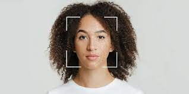

Ola, seja bem vindo ao portal para registro de fotos, com o proprio nome diz o intuito e registrar fotos, para reconhecimento facial das nossas catracas.
Abaixo, segue uma imagem modelo de como deve ser a sua postura para retirada da foto, por gentileza, nao usar adornos que possa impedir ou ate prejudicar o reconhecimento
facial.

E bem simples, o intuito e recolher os registros de sua face, como um padrao de uma foto 3x4, aquela foto da identidade, sinta se a vontade a sorrir ou nao,
Vamos la? Quando estiver pronto basta clicar no botao abaixo.